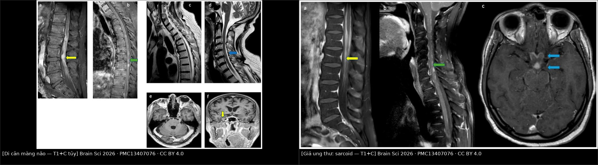
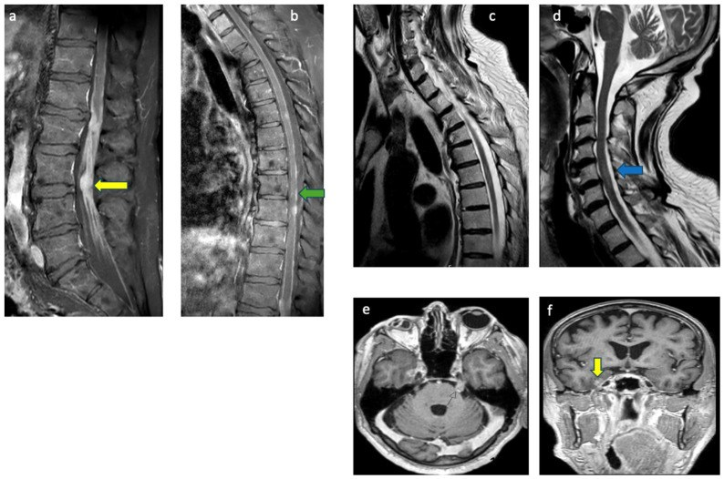
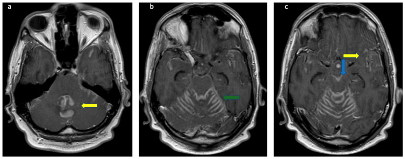
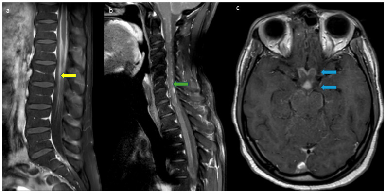

1659 — Di căn màng não – nội tủy (leptomeningeal metastasis): "ung thư đi theo dịch não tủy" / Leptomeningeal metastasis (LM)
Tags: pattern:ngam-mang-nao pattern:ngam-mang-tuy pattern:not-mang-nao pattern:giay-day-than-kinh pattern:ung-thuy-nao pattern:gia-ung-thu vung:nao vung:cot-song vung:ong-song score:MRI-LMD-grade score:Evans score:LM-molGPA score:RANO-LM protocol:MRI-3D-T1C protocol:FLAIR-sau-tiem protocol:MRI-toan-truc protocol:DNT-te-bao incidentaloma:ngam-mang-nao
Mức chắc chắn (certainty): tổng hợp y văn (literature synthesis) — đọc trực tiếp toàn văn 5 bài mở qua Europe PMC/PMC (Brain Sciences 2026; Neuroradiology 2026; Current Oncology 2023; Thoracic Cancer 2025; Frontiers in Oncology 2026), có 3 ca nguyên văn dùng cho Blind Quiz (ảnh CC BY 4.0, cùng một loạt ca). Số liệu dịch tễ và ngưỡng lấy từ phần Introduction/Results/Discussion của các bài gốc.
1. Tổng quan — vì sao ung thư "đi theo dịch não tủy", và vì sao hình ảnh trông chỉ là "màng não sáng lên"
- Định nghĩa: di căn màng não – nội tủy (leptomeningeal metastasis, LM; còn gọi leptomeningeal carcinomatosis / leptomeningeal disease – LMD) là tình trạng tế bào ung thư xâm nhập màng mềm (pia mater) và màng nhện (arachnoid), rồi phát tán trong khoang dưới nhện (subarachnoid space) theo dòng dịch não tủy (cerebrospinal fluid, CSF). Đây là một bệnh khác về bản chất, tiên lượng và điều trị so với di căn nhu mô não (brain metastasis) — không được gộp chung khi đọc phim và khi quyết định điều trị (Thoracic Cancer 2025, Đồng thuận 1).
- Ba đường lan (sinh lý bệnh): (1) xâm nhập trực tiếp từ màng não cứng, xương hoặc dây thần kinh kế cận; (2) lan theo đường máu qua đám rối tĩnh mạch; (3) vào qua lỗ thủng của đám rối mạch mạc (choroid plexus) — nơi hàng rào máu–dịch não tủy mỏng nhất, cho phép tế bào và chất tan đi vào CSF. Đây là lý do tổn thương hay gặp ở bể nền, mặt dưới não, dây thần kinh sọ và rễ thần kinh tủy — tức nơi CSF chảy chậm và "đọng".
- Vì sao CSF là "nơi trú ẩn" (sanctuary): thuốc hệ thống khó vào CSF vì hàng rào máu–não và hàng rào máu–CSF; vì thế LM có thể tiến triển trong khi di căn ngoài thần kinh đang đáp ứng — đã gặp ở ca lymphoma sau CAR-T trong loạt ca của bài này. Cũng vì vậy điều trị nội tủy (intrathecal) là một trục riêng.
- TẠI SAO màng não "sáng lên" khi tiêm gadolinium (vật lý):
- Gadolinium rút ngắn T1 của nước xung quanh → tín hiệu tăng trên T1. Bình thường màng mềm không có hàng rào máu–não (mạch máu của pia là mạch có lỗ thủng), nên chỉ cần một lượng nhỏ thuốc rò ra là màng đã ngấm — vì thế màng mềm bình thường vẫn có thể ngấm mỏng, mảnh, đối xứng ở một số vị trí.
- Khi có tế bào u, hàng rào bị phá vỡ + tăng sinh mạch + ứ trệ CSF → ngấm dày hơn, không đều, dạng nốt hoặc lan theo rãnh. Điểm mấu chốt định vị: màng mềm lách vào đáy rãnh não (sulci) và quanh dây thần kinh, còn màng não cứng (dura/pachymeninges) chỉ áp vào mặt trong xương sọ và không đi vào rãnh. Đây là quy tắc "theo rãnh = màng mềm" — dùng để phân biệt leptomeningeal với pachymeningeal.
- FLAIR sau tiêm (post-contrast FLAIR): FLAIR xóa tín hiệu CSF (nên CSF đen), do đó một vệt thuốc rất mỏng trong rãnh nổi bật hơn hẳn so với nền đen; độ tương phản này tăng khi chụp muộn 5–10 phút sau tiêm (Neuroradiology 2026 mô tả đúng giao thức này). Báo cáo so sánh cho thấy FLAIR sau tiêm nhạy hơn T1 sau tiêm cho tổn thương màng não, với độ nhạy 71,4% (T1 2D) – 71,4% (FLAIR 2D) – 82,9% (FLAIR sau tiêm) trong một nghiên cứu, và 34% (FLAIR) vs 66% (T1 sau tiêm) trong nghiên cứu khác (Thoracic Cancer 2025, Đồng thuận 3) — tức hai chuỗi bổ trợ nhau, không thay thế nhau.
- Bẫy chuỗi đen máu (black-blood, ví dụ T1-SPACE): kỹ thuật xóa tín hiệu máu có thể tạo vệt/nốt tăng tín hiệu giả đúng ở vị trí màng mềm → giả "LM độ 2". Loạt ca 2026 cố ý không dùng chuỗi này khi chẩn đoán vì lý do đó.
- Tần suất và tiên lượng (định lượng):
- LM gặp ở 5–15% bệnh nhân u đặc; vú 5–35%, phổi 10–26%, melanoma 5–15%; ước tính ~110.000 ca mới/năm tại Hoa Kỳ (Neuroradiology 2026). Tổng quan khác ghi 1–8% toàn bộ bệnh nhân ung thư (Current Oncology 2023).
- Sống trung bình 3–6 tháng dù có điều trị (Neuroradiology 2026); melanoma 17–22 tuần; NSCLC 3–11 tháng; vú 16 tuần – 2 năm (Current Oncology 2023).
- Thời gian từ chẩn đoán ung thư nguyên phát đến LM: 1,2–2 năm (u đặc), 11 tháng (ung thư máu).
- U nguyên bào thần kinh đệm (glioblastoma): LM có triệu chứng ~2%, nhưng tới 25% trong nghiên cứu tử thiết (J Korean Soc Radiol 2025, PMC12710264) — nghĩa là phần lớn LM bị bỏ sót khi còn sống.
- Triệu chứng (150 ca u đặc): đau đầu 39%, buồn nôn/nôn 25%, yếu chi dưới 21% (Thoracic Cancer 2025) — không đặc hiệu, nên hình ảnh + CSF mới là trục chẩn đoán.
- Vì sao "âm tính" vẫn không loại trừ: MRI sau tiêm: độ nhạy 70–87%, độ đặc hiệu 75–94%; CT chỉ 23–38% (Thoracic Cancer 2025). Tế bào học CSF: lần chọc đầu 50–60%, lặp lại 75–85%, độ đặc hiệu > 95% (Neuroradiology 2026; Thoracic Cancer 2025). Vì vậy chẩn đoán LM là chẩn đoán phối hợp, không phải một xét nghiệm duy nhất.
2. Mẫu hình (pattern) + chẩn đoán phân biệt theo vị trí (gamut)
- Khuôn 1 — Ngấm màng mềm DẠNG ĐƯỜNG (linear/curvilinear) men theo rãnh não, đối xứng hoặc không. Gamut: LM vs viêm màng não do thuốc/hóa chất vs viêm màng não nhiễm trùng vs giả tiến triển sau xạ (pseudoprogression). Chốt: có nốt/dày > 2 mm, không đối xứng, kèm dây thần kinh sọ → nghi LM; trong trường xạ, tự hết < 6 tháng → giả tiến triển.
- Khuôn 2 — Ngấm DẠNG NỐT (nodular) ở bể nền, mặt dưới não, màng não thất. Gamut: LM vs lymphoma thần kinh trung ương vs lao màng não vs nấm (cryptococcus) vs sarcoidosis thần kinh. Chốt: nốt + phù não kèm khối nhu mô + tế bào học dương → LM; nốt bể nền + giãn não thất + giảm glucose CSF nặng → lao/nấm.
- Khuôn 3 — Dây thần kinh sọ dày/ngấm (V, VII, VIII, dây thị giác, giao thoa). Gamut: LM vs sarcoidosis vs lymphoma vs bệnh Lyme thần kinh vs viêm mạch tế bào khổng lồ (giả u dây thị giác). Chốt: ngấm lan tới giao thoa + u phổi/vú đã biết → LM; ngấm dây thị + phì đại tuyến lệ/màng não cứng dày → sarcoid.
- Khuôn 4 — Rễ thần kinh đuôi ngựa dày, "dính chùm", ngấm dạng hạt đường (sugar coating). Gamut: LM (drop metastasis) vs lymphoma vs viêm rễ do CMV vs hội chứng Guillain–Barré vs sarcoidosis vs viêm màng nhện dính sau mổ/xạ. Chốt: nốt > 3 mm + tế bào ác tính trong CSF → LM; ngấm đối xứng, chỉ rễ trước, không nốt, có yếu chi tiến triển cấp → GBS.
- Khuôn 5 — Ngấm màng não thất (ependymal) ± giãn não thất. Gamut: LM vs nhiễm trùng não thất (ventriculitis, đặc biệt có EVD/shunt) vs u màng não thất nguyên phát. Chốt: mủ hạn chế khuếch tán (DWI sáng/ADC tối) + sốt + dịch não thất đục → nhiễm trùng; ngấm mỏng + nốt + không sốt → LM.
- Khuôn 6 — "Giả bể nước" (pseudocisternogram): toàn bộ CSF trong bể nền sáng trên FLAIR sau tiêm. Gamut: viêm màng não do HIV vs LM lan rộng vs viêm màng não do lao. Chốt: đối xứng + không nốt + HIV + tế bào học âm → HIV; không đối xứng + nốt + tế bào học dương → LM.
- Khuôn 7 — Màng não CỨNG dày, nhẵn, không vào rãnh (pachymeningeal). Gamut: viêm màng não cứng do IgG4 vs di căn màng cứng (vú/tuyến tiền liệt) vs hạ áp lực nội sọ vs viêm màng não cứng do sarcoid. Chốt: dày > 2/3 chu vi + vào rãnh → màng mềm; dày màng cứng đối xứng + tụt não + đau đầu tư thế → hạ áp lực.
- Gợi nhớ "RÃNH – NỐT – DÂY – RỄ": Rãnh (ngấm theo rãnh = màng mềm) · Ã (nốt > 2 mm bể nền) · Nốt ở màng não thất · Hỏi bệnh ung thư đã biết · Dây thần kinh sọ dày · Âm tính CSF không loại trừ · Yêu cầu chụp toàn trục (não + tủy) · Rễ đuôi ngựa dày/dính · Ễ (FLAIR sau tiêm muộn 5–10 phút).
3. Bảng so sánh phân biệt (ma trận đối chiếu)
| Thực thể (entity) | Hình ảnh điển hình (MRI sau tiêm) | Chốt vào (rule-in) | Chốt loại (rule-out) | Gợi ý xác nhận |
|---|---|---|---|---|
| Di căn màng não (LM) | Ngấm màng mềm dày, không đều, dạng nốt hoặc đường, theo rãnh, bể nền, dây thần kinh sọ, rễ đuôi ngựa; có thể kèm giãn não thất | Nốt > 2 mm hoặc ngấm dày lan nhiều vùng + tế bào ác tính trong CSF | Không loại trừ được bằng MRI âm hay CSF âm lần đầu (nhạy chỉ 50–60%) | CSF ≥ 10 mL, lặp lại; ctDNA; sinh thiết màng não khi vẫn nghi |
| Lymphoma thần kinh trung ương | Nốt bể nền/quanh não thất, ngấm đồng nhất, hạn chế khuếch tán rõ (tế bào đặc) | ADC rất thấp + ngấm đồng nhất + đáp ứng nhanh với steroid | Ngấm dạng đường mảnh chỉ ở rãnh, không khối → ít gợi ý lymphoma | Flow cytometry CSF, sinh thiết não |
| Lao màng não | Ngấm bể nền dày, có ổ nhu mô (tuberculoma), giãn não thất, nhồi máu do viêm mạch | Ngấm bể nền + giảm glucose CSF nặng + protein rất cao + ổ nhu mô | Không có ổ nhu mô, ngấm lan mặt lồi đối xứng → ít lao | PCR lao, AFB, nội soi não thất lấy mẫu |
| Sarcoidosis thần kinh | Ngấm nhẵn tới dạng nốt, bể nền, dây thị/giao thoa, màng não cứng dày, hay tái phát | Ngấm dây thị + giao thoa + phì đại tuyến lệ/tuyến mang tai + ACE CSF tăng | Nốt lan rộng mặt lồi không kèm dây thị → ít sarcoid | Sinh thiết (mô hạt không hoại tử), ACE, PET |
| Nấm (cryptococcus) | Giãn khoang quanh mạch (gelatinous pseudocyst) ở hạch nền, ngấm màng mềm nhẹ | Giãn khoang Virchow–Robin + kháng nguyên cryptococcus dương | Chỉ ngấm màng mềm không giãn khoang quanh mạch → ít nấm | Kháng nguyên CSF, cấy nấm |
| Viêm màng não do HIV | Ngấm lan tỏa, "giả bể nước" đối xứng, không nốt | HIV + ngấm đối xứng lan tỏa + tế bào học âm | Nốt không đối xứng hoặc dày khu trú → ít HIV | HIV RNA, CD4, loại trừ nhiễm trùng cơ hội |
| Giả tiến triển / thay đổi sau xạ–mổ | Ngấm mới trong trường xạ, dạng đường, có thể kèm phù | Xuất hiện trong 6 tháng sau hóa–xạ, tự giảm không đổi điều trị | Nốt mới ngoài trường xạ hoặc tăng dần → nghi tái phát/LM | Theo dõi 6–12 tuần, perfusion/DSC, sinh thiết |
| Viêm màng não cứng (pachymeningitis, IgG4) | Dày màng cứng nhẵn, đối xứng, không vào rãnh | Dày màng cứng + IgG4 huyết thanh/CSF tăng + đáp ứng steroid | Ngấm lách vào rãnh hoặc quanh dây thần kinh → màng mềm, không phải màng cứng | Sinh thiết màng cứng, IgG4 |
| CAA-ri (viêm do bệnh mạch amyloid) | Ngấm màng mềm khu trú, không đối xứng + giảm tín hiệu SWI nhiều ổ + tổn thương chất trắng hai bên | Nhiều vi chảy máu thùy trên SWI + ngấm màng não + không tế bào ác tính | Không có vi chảy máu trên SWI → ít CAA-ri | SWI, APOE, sinh thiết não (ca nguyên văn PMC13605293) |
- Ảnh ghép đối chiếu:
— tạo bằngtools/make_composite.py(letterbox, giữ tỷ lệ gốc), dải đen ghi tên bệnh + attribution.

4. Protocol chụp + hệ phân độ/điểm chuẩn hóa
4.1. Giao thức MRI (não + toàn trục tủy)
| Bước | Chuỗi (sequence) | Thông số/ngưỡng then chốt | Vì sao |
|---|---|---|---|
| 1 | MRI sọ 3.0 T, 3D T1 sau tiêm (MPRAGE/BRAVO/VIBE) | Lát ≤ 1 mm đẳng hướng, dựng lại 3 mặt phẳng; dày lát tối đa 3 mm khi chỉ có 2D | Tổn thương màng mềm rất mỏng; 3D cho phép dựng lại theo trục vuông góc với rãnh |
| 2 | T2 FLAIR trước tiêm + FLAIR sau tiêm muộn 5–10 phút | Chụp muộn là bắt buộc — nồng độ thuốc trong CSF tăng dần | CSF bị xóa tín hiệu → vệt thuốc mỏng "nổi" trên nền đen; nhạy hơn T1 ở một số nghiên cứu |
| 3 | T1 sau tiêm toàn bộ cột sống (sagittal, chia 3 đoạn cổ–ngực–thắt lưng) | Không bỏ đoạn nào; thêm axial T1 sau tiêm qua chỗ bất thường | LM hay ở rễ đuôi ngựa và mặt sau tủy; bỏ tủy = bỏ 1/3 chẩn đoán |
| 4 | T2 sagittal tủy | Tìm tăng tín hiệu trong tủy (phù do chèn ép/xâm nhập) | Phân biệt tổn thương nội tủy với ngấm màng |
| 5 | DWI/ADC, SWI (não) | ADC thấp = tế bào đặc (lymphoma/mủ); SWI = vi chảy máu | Phân biệt lymphoma, nhiễm trùng, CAA-ri |
| 6 | KHÔNG dùng chuỗi đen máu khi chẩn đoán LM | T1-SPACE có thể tạo vệt/nốt giả | Tránh "giả LM độ 2" |
- Chỉ định chụp: mọi bệnh nhân ung thư có đau đầu mới, liệt dây thần kinh sọ, đau rễ/yếu chi dưới, rối loạn tri giác không giải thích; chụp toàn trục khi đã thấy tổn thương ở một nơi, vì LM thường đa ổ.
- Nguyên tắc "chụp muộn, chụp 3D, chụp cả tủy": đây là 3 thay đổi làm tăng tỷ lệ phát hiện nhiều nhất; CT chỉ 23–38% nên không dùng CT để loại trừ.
4.2. Giao thức dịch não tủy (CSF)
| Hạng mục | Ngưỡng / quy tắc | Số liệu |
|---|---|---|
| Thể tích | ≥ 10 mL, lấy ống 3–4 (ít tế bào nhất) | 2–5 mL: dương tính 30,5%; > 5 mL: 55,5% |
| Thời gian xử lý | < 30 phút sau lấy, hoặc cố định ngay | Tế bào thoái hóa nhanh → âm giả |
| Số lần chọc | Lặp lại tối đa 3 lần | Lần 1 50–60%, lặp lại 75–85%; > 3 lần không tăng thêm |
| Tế bào học | Độ đặc hiệu > 95%, độ nhạy 45–90% | Âm không loại trừ |
| Sinh hóa | Tăng tế bào, protein tăng, glucose giảm | Bộ ba này nhạy 50–70% |
| Phân tử | ctDNA/CTC trong CSF | Gộp 668 bệnh nhân: độ nhạy 87,0–97,9%, độ đặc hiệu 89,0–93,8% |
| Áp lực mở | Đo và ghi lại | Tăng áp lực = chỉ định xem xét dẫn lưu |
4.3. Hệ phân độ MRI-LMD (Msherghi 2026) — thoát khỏi "có/không"
- Thang chính (grade 1–6) dựa trên ngấm/tăng tín hiệu màng mềm:
- 1 = không có bằng chứng LM;
- 2 = nghi ngờ, ngấm mỏng khu trú;
- 3 = ngấm mỏng lan tỏa;
- 4 = ngấm dày/nốt khu trú;
- 5 = dày dạng nốt lan tỏa;
- 6 = xâm nhập nhu mô + bệnh nốt lan rộng.
- Điểm cộng thêm: Evans index > 0,25 → +1; khối di căn nhu mô: 1 khối +1, nhiều khối +2. Tổng 0–9.
- Ngưỡng dùng: grade ≥ 2 mới tính điểm phụ; grade 1 = âm.
- Hiệu lực (32 bệnh nhân, 2 bác sĩ độc lập): ICC = 0,953 (p < 0,001); tử vong theo nhóm: 8,6% (grade 1–2) · 50% (grade 3–4) · 80,0% (grade ≥ 5); khác biệt sống còn p = 0,00011.
- Phân loại EANO–ESMO (bắt buộc nhớ): type I = có bằng chứng tế bào học/mô bệnh học trong CSF; type II = chỉ có hình ảnh hoặc triệu chứng, không có bằng chứng tế bào. Type I tiên lượng xấu hơn type II (một số nghiên cứu NSCLC không lặp lại được khác biệt này — phản biện ở mục 5).
4.4. Phân tầng tiên lượng và điều trị
- Hình thái trên MRI (71 ca NSCLC): dạng đường (linear, n = 41) vs hỗn hợp (mixed, n = 30); gánh nặng tổn thương 26,86 ± 26,72 vs 7,25 ± 10,95 (p < 0,001); > 3 vùng não: sống trung bình 14 vs 24 tháng (p = 0,016); xâm nhập thùy thái dương: HR 1,96 (1,07–3,58); số tổn thương: HR 1,02 (1,01–1,03).
- LM-molGPA (NSCLC): ba nhóm nguy cơ sống 0,3 · 3,5 · 15,9 tháng.
- Điều trị (khung, không thay thế quyết định của bác sĩ điều trị):
- Nội tủy (intrathecal chemotherapy, ITC): methotrexate, cytarabine, thiotepa; Ommaya được ưu tiên (đồng thuận mức II, 97% chuyên gia đồng ý) so với chọc dòng thắt lưng lặp lại.
- Cytarabine liposome nội tủy + hóa trị hệ thống: tăng sống thêm ~3 tháng (pha II). Trastuzumab nội tủy ở HER2+: kiểm soát tiến triển thần kinh 75% ở tuần 10, độc tính không đáng kể.
- Xạ trị: WBRT cho tổn thương sọ có triệu chứng; xạ toàn trục (craniospinal irradiation, CSI) 20–40 Gy/5–20 phân liều; xạ proton CSI có thể kéo dài PFS/OS so với photon.
- Dẫn lưu CSF (shunt/Ommaya dẫn lưu) khi tăng áp lực nội sọ kháng trị hoặc giãn não thất có triệu chứng — giảm triệu chứng nhanh, tạo điều kiện điều trị tiếp.
- Khi nào dừng/không điều trị tích cực: KPS < 60 ít đáp ứng; bệnh nhân hôn mê, bệnh hệ thống không kiểm soát, không còn lựa chọn hệ thống → chuyển chăm sóc giảm nhẹ. Mục tiêu điều trị LM là giảm nhẹ, không phải chữa khỏi.
flowchart TD
A["Ung thư + đau đầu, liệt dây sọ, đau rễ"] --> B["MRI sọ 3T: 3D T1 sau tiêm + FLAIR sau tiêm muộn"]
B --> C{"Ngấm màng mềm theo rãnh?"}
C -->|"Không"| D["Xem lại chuỗi: black-blood giả, flow artifact, màng cứng"]
C -->|"Có"| E["Chấm grade 1-6 + Evans + khối nhu mô = 0-9"]
E --> F["MRI toàn trục tủy T1 sau tiêm"]
F --> G["CSF: >= 10 mL, xử lý < 30 phút, tế bào học + flow + ctDNA"]
G --> H{"Tế bào ác tính?"}
H -->|"Có"| I["EANO-ESMO type I: tiên lượng xấu, điều trị ngay"]
H -->|"Không"| J["Lặp CSF tối đa 3 lần + sinh thiết màng não nếu vẫn nghi"]
I --> K["ITC qua Ommaya + điều trị hệ thống + xạ trị triệu chứng"]
J --> K
K --> L["Đánh giá RANO-LM mỗi 6-8 tuần"]
L --> M{"KPS < 60 hoặc bệnh hệ thống mất kiểm soát?"}
M -->|"Có"| N["Chuyển chăm sóc giảm nhẹ"]
M -->|"Không"| K
5. Biến thể bình thường và cạm bẫy
- Biến thể bình thường dễ gọi nhầm là LM:
- Ngấm mỏng màng mềm ở đỉnh não và quanh thân não ở người trẻ, đối xứng, mảnh < 1 mm — bình thường.
- Hạt nhện (arachnoid granulations) ở xoang dọc trên/xoang ngang: nốt nhỏ, đồng tín hiệu CSF, không ngấm hoặc ngấm viền — không phải nốt u.
- Đám rối mạch mạc (choroid plexus) ngấm mạnh bình thường ở não thất — đừng gọi là "ngấm màng não thất".
- Ngấm màng cứng sau chọc dò/mở sọ/rò CSF: dày màng cứng nhẵn, đối xứng, không vào rãnh, kèm tụt não, màng não căng, xoang hang giãn — bộ ba của hạ áp lực nội sọ, không phải LM.
- Ngấm rễ thần kinh nhẹ sau xạ trị hoặc sau mổ cột sống — đối xứng, không nốt, ổn định qua các lần chụp.
- Cạm bẫy (pitfall) hay gặp nhất:
- Bỏ tủy vì "não đã bình thường" — LM có thể chỉ ở tủy (thể đuôi ngựa). Luôn chụp toàn trục khi nghi.
- Tin CSF âm lần đầu — lần đầu chỉ dương 50–60%; ca 1 của bài này có 3 lần tế bào học âm mà vẫn là LM (chẩn đoán bằng sinh thiết màng não).
- Chuỗi đen máu (T1-SPACE) tạo vệt giả — đúng vị trí màng mềm, dễ chấm "grade 2"; xác nhận bằng T1 3D thường + FLAIR sau tiêm.
- FLAIR sau tiêm chụp quá sớm — trước 5 phút, nồng độ thuốc trong CSF chưa đủ → âm giả. Chụp muộn 5–10 phút.
- Nhầm màng cứng với màng mềm — màng cứng không lách vào rãnh; nếu thấy ngấm theo rãnh thì là màng mềm.
- Bỏ sót "giả ung thư" ở bệnh nhân đã có ung thư: ca nguyên văn CAA-ri (82 tuổi, vừa mổ adenocarcinoma phổi) có ngấm màng mềm nhiều ổ nhưng SWI nhiều vi chảy máu thùy → chẩn đoán CAA-ri, không phải LM (PMC13605293). SWI là chuỗi quyết định ở đây.
- Ảo giác do dòng CSF (flow artifact) trong ống sống — thường gặp ở T2, giảm khi đổi chuỗi/đổi hướng, không ngấm trên T1 sau tiêm.
- Sai số "satisfaction of search": thấy 1 khối di căn nhu mô rồi dừng, không nhìn màng não/rễ thần kinh → bỏ LM đi kèm.
- Phản biện trung thực nguồn: phân loại EANO–ESMO cho rằng type I (tế bào học dương) xấu hơn type II, nhưng một nghiên cứu NSCLC không tìm thấy khác biệt OS (Thoracic Cancer 2025 dẫn lại) — nên không dùng type để tiên lượng cá nhân khi chưa có dữ liệu đặc hiệu loại ung thư. Tương tự, thang grade 1–6 mới là nghiên cứu khám phá 32 ca, chưa ngoại kiểm — dùng để chuẩn hóa mô tả và theo dõi, chưa dùng như tiêu chuẩn chẩn đoán.
6. Tự lượng giá — Blind Quiz ngay trên trang tĩnh
Ca 1 — Yếu hai chi dưới tiến triển + liệt dây VII hai bên

- Gợi ý lâm sàng: nam 76 tuổi, yếu hai chi dưới tăng dần tới liệt, bí tiểu, mất cảm giác tới T10, liệt dây VII hai bên; CSF 38 tế bào lympho, protein 281 mg/dL, glucose thấp; 3 lần tế bào học âm, các panel tự miễn/nhiễm âm.
- Câu hỏi: (a) Mô tả dấu hiệu chính trên T1 sau tiêm cột sống và sọ? (b) Ba chẩn đoán phân biệt? (c) Dấu hiệu nào khiến phải sinh thiết màng não thay vì theo dõi?
Bấm để hiện đáp án (findings + chẩn đoán)
- Dấu hiệu (findings): dày dạng nốt + ngấm mạnh màng mềm rễ đuôi ngựa (mũi tên vàng, a); ngấm màng cứng lan dọc tủy cổ–ngực + nốt khu trú đoạn ngực thấp (mũi tên xanh lá, b); tăng tín hiệu trong tủy trên T2 (mũi tên xanh dương, c, d); ngấm dây thần kinh V (e); tổn thương dựa màng cứng thùy thái dương phải (mũi tên vàng, f).
- Chẩn đoán (diagnosis): di căn màng não – nội tủy do u tế bào hình thoi/glioblastoma — vì tế bào u lan theo CSF, phá hàng rào máu–màng mềm nên gadolinium rò ra thành nốt dọc rễ và màng não, trong khi tế bào học CSF vẫn âm (độ nhạy lần đầu chỉ 50–60%).
- Bài học: CSF âm lặp lại không loại trừ LM; hình ảnh dày–nốt lan nhiều tầng + thất bại với IVIG/steroid/plasma exchange là lý do sinh thiết màng não.
- Nguồn ảnh: Brain Sciences 2026, Figure 1 — PMC13407076, CC BY 4.0 (Hani M et al.).
Ca 2 — Mất thăng bằng, nói khó, rung giật nhãn cầu

- Gợi ý lâm sàng: nam 42 tuổi, nuốt khó + sụt ~18 kg, đã chẩn đoán adenocarcinoma thực quản di căn hạch; sau đó nói khó, yếu, mất thăng bằng, nôn không cầm; CT sọ không phát hiện bất thường.
- Câu hỏi: (a) Vì sao CT âm mà vẫn có bệnh? (b) Mô tả phân bố ngấm thuốc? (c) Nêu 2 việc phải làm tiếp theo.
Bấm để hiện đáp án (findings + chẩn đoán)
- Dấu hiệu (findings): ngấm dày lan tỏa màng mềm ở thùy nhộng tiểu não, các lá tiểu não, mặt thân não (mũi tên vàng/xanh lá/xanh dương), khe Sylvius, bể trên yên và bể nền, rãnh thái dương trước; kèm nhiều dây thần kinh sọ (V, VII, VIII) và tổn thương xương sọ.
- Chẩn đoán (diagnosis): di căn màng não do adenocarcinoma thực quản/dạ dày — tế bào u theo CSF tới các bể và lá tiểu não; CT chỉ nhạy 23–38% nên CT âm không loại trừ.
- Việc phải làm: MRI toàn trục tủy T1 sau tiêm + CSF ≥ 10 mL tế bào học/flow/ctDNA; đánh giá grade MRI-LMD để phân tầng.
- Nguồn ảnh: Brain Sciences 2026, Figure 3 — PMC13407076, CC BY 4.0 (Hani M et al.).
Ca 3 — Đau lưng–hông hai bên rồi yếu chi dưới ở người trẻ

- Gợi ý lâm sàng: nam 29 tuổi, khỏe mạnh, đau lưng–hông–gối đột ngột 2 tháng, rồi tê/yếu hai chi dưới, bí tiểu; CSF 231 tế bào lympho, protein 742 mg/dL, glucose 15 mg/dL, các xét nghiệm nhiễm trùng âm.
- Câu hỏi: (a) Hình ảnh gợi ý ung thư hay viêm? (b) Dấu hiệu nào trên ảnh giúp phân biệt? (c) Chẩn đoán nào phải đứng đầu danh sách?
Bấm để hiện đáp án (findings + chẩn đoán)
- Dấu hiệu (findings): ngấm màng mềm nhẵn tới dạng nốt dọc tủy ngực thấp, nón tủy, rễ đuôi ngựa (mũi tên vàng, a; xanh lá, b); ngấm bể trên yên dọc phức hợp thị giác và cuống tuyến yên (mũi tên xanh dương, c).
- Chẩn đoán (diagnosis): sarcoidosis thần kinh (neurosarcoidosis) — "giả ung thư"; ngấm nhẵn hơn LM (LM thường dày, nốt, không đều), kèm ngấm dây thị/giao thoa + cuống tuyến yên là chìa khóa; CSF giảm glucose mạnh + protein rất cao gặp ở cả lao, nấm và sarcoid.
- Bài học: ung thư không phải là chẩn đoán duy nhất ở bệnh nhân có ngấm màng mềm; cần ACE CSF, CT ngực, PET, sinh thiết trước khi điều trị ung thư.
- Nguồn ảnh: Brain Sciences 2026, Figure 6 — PMC13407076, CC BY 4.0 (Hani M et al.).
Bài liên quan chéo
- 1676 – Đặt bồn Ommaya: vị trí catheter, biến chứng & kiểm tra bồn bằng cản quang (thủ thuật của chính đường đưa thuốc)
- 213 – U não
- 214 – Nhiễm trùng thần kinh trung ương
- 218 – Thoát vị não & não úng thủy (thang Evans)
- 216 – Dị dạng mạch & huyết khối xoang tĩnh mạch não
- 3029 – ARIA khi dùng kháng thể kháng amyloid
- 3030 – Tụ máu dưới màng cứng mạn tính
Ảnh
images/1659_di-can-mang-nao_MRI_brainsci-g001.jpg— T1 sau tiêm cột sống + sọ, ca glioblastoma (Figure 1).images/1659_di-can-mang-nao_MRI_brainsci-g003.jpg— T1 sau tiêm sọ trục ngang, ca adenocarcinoma (Figure 3).images/1659_di-can-mang-nao_MRI_brainsci-g006.jpg— T1 sau tiêm cột sống + bể trên yên, ca sarcoidosis (Figure 6).images/composite_lm-vs-sarcoid_T1C.jpg— ảnh ghép đối chiếu (di căn màng não vs sarcoid), tạo bằngtools/make_composite.py.- Nguồn + giấy phép từng ảnh:
images/CREDITS.md; link gốc:sources.md.
Không dùng để chẩn đoán độc lập khi chưa có người hướng dẫn.